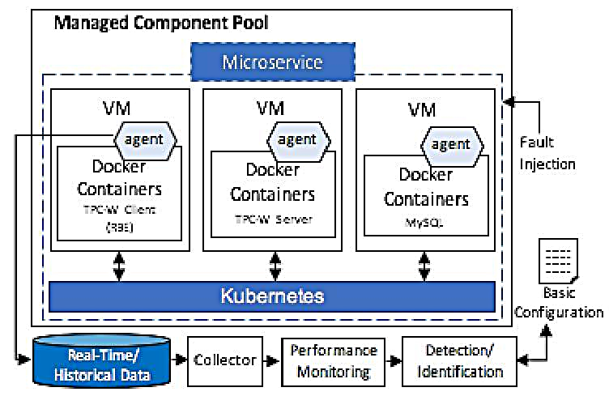

流程图

输入与输出
输入
- 实时监控数据：
- 微服务调用链数据（请求延迟、状态码、错误率等）
- 容器资源使用情况（CPU、内存、网络流量等）
- 历史数据：
- 正常运行时的服务调用模式和性能指标
- 历史故障案例，用于训练和优化模型
- 服务依赖图谱：
- 描述微服务之间的调用关系，用于异常路径分析
输出
- 异常检测结果：
- 是否检测到异常（Yes/No）
- 异常的严重程度（基于偏差度量）
- 根因定位信息：
- 受影响的服务名称及容器ID
- 异常的根本原因（如延迟激增、错误传播等）
- 可视化报告：
- 异常路径的详细分析，包括服务间的调用链路
- 实时状态与基准模型的对比图表
工作流程
(1) 数据采集（Collector）
- 输入来源：实时监控数据和历史数据
- 数据类型：
- 微服务之间的调用链数据（如请求延迟、状态码、错误率等）
- 容器化环境中的资源使用情况（如CPU、内存、网络流量等）
- 数据收集方式：
- 使用代理（agent）部署在每个容器中，实时捕获微服务的运行时行为
- 数据通过Kubernetes平台统一管理，并存储到实时/历史数据库中
(2) 性能监控（Performance Monitoring）
- 目标：对收集到的数据进行初步处理和分析，提取关键性能指标
- 主要任务：
- 计算服务间的调用频率、延迟分布、错误率等统计特征
- 构建服务依赖图谱，记录服务间的调用关系
- 将数据转换为时间序列或状态转移矩阵的形式，为后续建模做准备
(3) 异常检测与定位（Detection/Identification）
- 核心模块：基于马尔可夫模型的异常检测框架
- 具体流程：
- 构建基准马尔可夫模型：
- 基于历史数据，分析正常情况下服务间的状态转移概率
- 构建服务调用的状态转移矩阵，作为正常行为的基准模型
- 实时状态监测：
- 对实时数据进行滑动窗口处理，计算当前状态转移的概率分布
- 比较实时状态转移与基准模型的差异，使用KL散度或卡方检验衡量偏差
- 异常检测：
- 当实时状态转移的概率分布与基准模型的偏差超过阈值时，触发异常报警
- 同时，根据服务依赖图谱，分析异常路径，定位故障组件
- 根因分析：
- 利用反向传播算法，结合服务间的调用关系，确定异常的根本原因
- 输出受影响的服务及其潜在故障点
- 构建基准马尔可夫模型：
(4) 故障注入与验证（Fault Injection）
- 目的：验证模型的准确性和鲁棒性
- 方法：
- 在模拟环境中注入人工故障（如增加延迟、模拟错误响应等），观察模型的检测效果
- 在真实环境中，通过对比实际故障场景与模型输出，评估其定位能力
(5) 配置与优化（Basic Configuration）
- 动态调整：
- 基于在线学习机制，周期性更新马尔可夫模型，以适应服务拓扑变化和动态扩缩容
- 根据实时反馈，调整异常检测的阈值和参数，提高模型的自适应性
技术亮点与不足
技术亮点
- 基于马尔可夫模型的状态转移分析：
- 利用马尔可夫模型捕捉服务间的状态转移特性，能够有效识别异常行为
- 状态转移矩阵提供了直观的异常检测依据，便于理解和服务依赖分析
- 实时与历史数据结合：
- 结合实时监控数据和历史数据，构建动态更新的基准模型，增强了模型的自适应性
- 能够快速响应服务拓扑变化和动态扩缩容场景
- 根因定位能力：
- 结合服务依赖图谱和反向传播算法，能够准确定位故障组件，减少误报
- 提供详细的异常路径分析，帮助运维人员快速修复问题
- 轻量化设计：
- 采用流式计算框架处理高维监控数据，降低计算开销，满足实时性需求
- 适合大规模容器化微服务架构，具有良好的扩展性
- 多维度异常检测：
- 同时检测性能异常（如延迟激增）和功能异常（如错误状态码传播），覆盖多种故障场景
技术不足
- 模型复杂度较高：
- 马尔可夫模型的构建和更新需要大量历史数据，对于新服务或冷启动场景可能不够稳定
- 状态转移矩阵的维度随服务数量增加而增大，可能导致计算复杂度上升
- 依赖历史数据的质量：
- 如果历史数据中存在噪声或异常样本，可能会影响基准模型的准确性，导致误报或漏报
- 需要额外的预处理步骤来清洗历史数据
- 动态环境适应性挑战：
- 在极端动态环境下（如频繁的服务更新或拓扑变化），模型的在线学习机制可能无法及时更新，导致检测精度下降
- 需要进一步优化模型的自适应性和鲁棒性
- 根因定位的局限性：
- 在复杂的依赖关系中，可能存在多个潜在故障点，模型可能难以精确区分根本原因
- 对于跨服务的级联故障，根因分析的准确性可能受到限制
- 计算资源消耗：
- 实时状态转移计算和模型更新需要一定的计算资源，尤其是在大规模微服务架构中
- 对于资源受限的环境，可能需要进一步优化算法效率